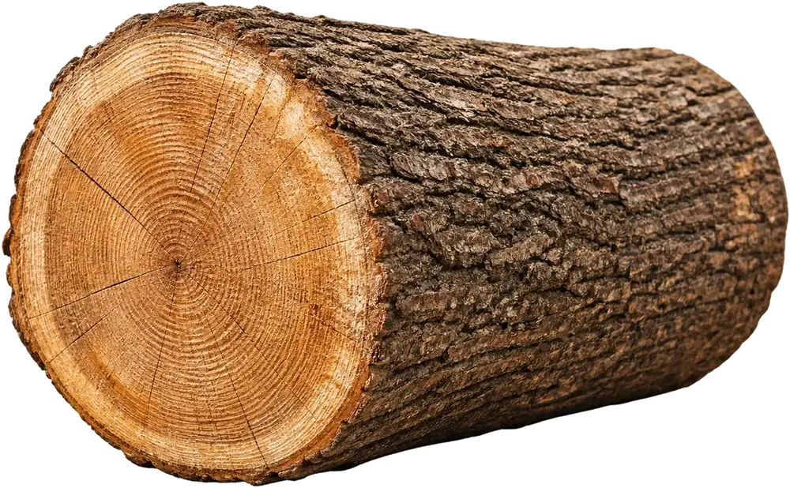
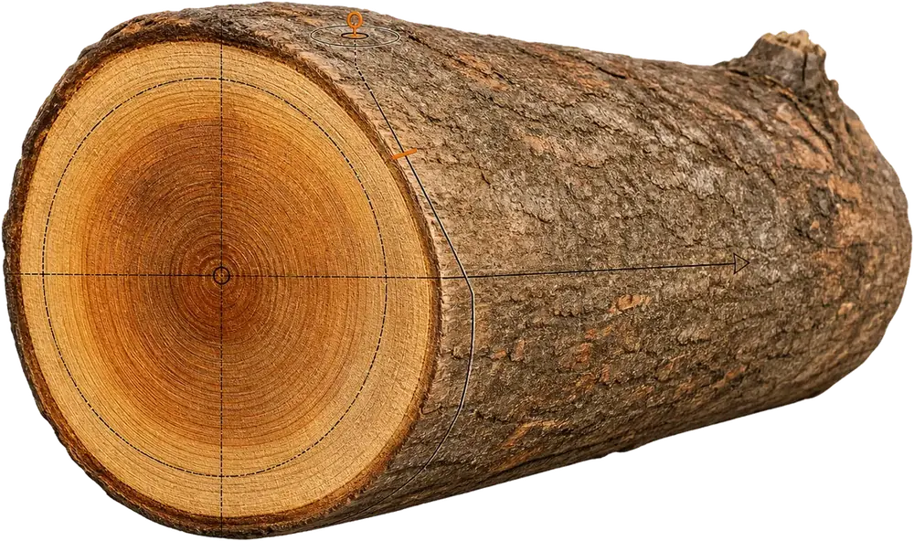

Inspect
Tree condition, access, utilities, lean, and nearby structures are checked before the scope is finalized.
Compare providers for controlled removals, hazardous trees, heavy limbs, tight access, and cleanup plans that account for every log and branch.

Overview
Tree removal can involve canopy weight, trunk direction, access lanes, rigging, protection boards, wood handling, and final cleanup. The safest estimate is the one that describes those details clearly.
Benefits
helps you compare provider responses by scope: how the tree comes down, where material goes, and how the site should look afterward.


X-Ray


Removal flow

Confirm tree condition, lean, access, targets, utilities, and nearby structures before removal starts.
Tree condition, access, utilities, lean, and nearby structures are checked before the scope is finalized.
Lowering lines, drop zones, and property protection are planned around the tree's position.
Canopy, limbs, and trunk sections are taken down in a controlled order.
Logs, brush, chips, and cleanup expectations are handled according to the quote.
Questions
Look for detail around access, rigging, cleanup, hauling, stump height, and property protection. A short estimate may omit work that matters later.
Often, but it must be agreed in advance. Ask whether the provider can cut to manageable lengths and where logs will be stacked.
Not always. Stump grinding may be a separate service, especially when a different machine or return visit is needed.
Reviews
“The estimate finally made sense. Access, cleanup, wood handling, and the stump question were all clear before anyone arrived.”
“I liked having the removal steps explained in plain language. It made comparing quotes much less stressful.”
“The provider questions helped us catch hauling and lawn protection details that were missing from the first quote.”
Related services
Ready
Share the tree location, access constraints, and cleanup expectations so the scope can be framed clearly.
Request an Estimate